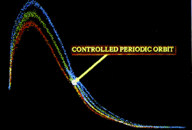

| The control parameter is the constant component of the magnetic field. |
| Varying the strength of this part of the applied magnetic field changed the return map slightly and moved the fixed point. |
|  |
| Knowing how the fixed point changes with the control parameter is the essential information for the OGY control method. |
Return to Magnetic ribbon control.